Servicios y Construcción SM
Pagaron un dominio en enero y lleva siete meses sin nada detrás.
La pieza Los 4 tipos de portón en plano técnico, con cotas y plazos
00 — Perfil
Desarrollador freelance y estudiante de ingeniería en ciberseguridad.
Hago sitios para negocios que necesitan existir en internet sin pagar una mensualidad eterna. HTML, CSS y JavaScript. Nada que se rompa solo en tres años.
01 — Enfoque
Cada librería que agregas es código ajeno corriendo en el navegador de tu cliente. No estoy en contra de usarlas: estoy en contra de arrastrar doscientos kilobytes para resolver algo que son quince líneas. La que entra, entra con su versión fija, su licencia revisada —hay librerías muy populares que no se pueden usar legalmente en un sitio que se cobra— y una razón que te puedo decir en una frase.
El JavaScript se cae, la señal se corta, el teléfono es viejo. Un sitio bien hecho igual muestra la dirección, el horario y el número de contacto. Todo lo demás —las animaciones incluidas— es decoración encima de eso.
Estudiar ciberseguridad me cambió cómo miro un formulario: qué datos pide, dónde terminan, quién puede leerlos. La mayoría de las landing pages recolectan más de lo que necesitan y lo guardan peor de lo que creen.
02 — Trabajo
Casi todos estos sitios los construí antes de la primera llamada. Miro qué le está fallando al negocio en internet —un dominio caído, una web de hace diez años, una ficha de Google sin sitio— y llego a la reunión con la página hecha y el problema resuelto. Los que dicen Propuesta son eso; el que dice Encargo es trabajo pagado.
Pagaron un dominio en enero y lleva siete meses sin nada detrás.
La pieza Los 4 tipos de portón en plano técnico, con cotas y plazos
Tres años mandando pacientes a una pantalla en negro que dice «Maintenance mode is on».
La pieza Carta de precios completa, antes del sillón
Su dominio está pagado y le responde 403 Forbidden a cualquiera que lo escriba.
La pieza Las 5 etapas de la obra con sus hitos de pago
Su dominio sigue indexado en Google y hace años que no lleva a ninguna parte.
La pieza Plano del terreno con los sectores marcados
Tres mil reseñas en Google y su dominio devuelve un aviso de cuenta suspendida.
La pieza Corte del valle entre el lago y las termas
Una veterinaria de barrio con 516 reseñas en Google y un sitio que responde con un error de PHP: quien aprieta «Sitio web» desde Maps aterriza en una pantalla en blanco con un mensaje en inglés. La nota es 3,9 —volumen alto, reputación mixta—, así que la página no presume de excelencia: pone por delante quién atiende, qué le van a hacer al animal y cuánto sale, antes de empezar. La pieza que la sostiene es el equipo: cuatro fichas con nombre, especialidad y años, y en cada una el hueco de foto no es un recuadro gris sino una instrucción —«la doctora con un paciente en brazos, mirando a la cámara: es la que más convierte en este rubro»—, más cinco compromisos por escrito en un bloque oscuro (le decimos el costo antes de tratar; si hay que derivar, se lo decimos el mismo día). La cara es vino nocturno: casi negro con tinte vino, un solo acento frambuesa, radio cero en todo y divisiones de un píxel. El fondo lo hacen tres capas dibujadas y ni una imagen: una aurora que deriva con @keyframes, grano de feTurbulence en data URI y una rejilla vertical fija que atraviesa el scroll entero. El carnet de vacunación de la lámina también está dibujado en CSS —pesa cero y se corrige escribiendo—. Las tipografías son de Fontshare, no de Google: Clash Display y Satoshi, self-hosted junto a Fragment Mono, 116 KB y cero peticiones a un dominio ajeno.
Una veterinaria de Pucón que no tenía sitio propio. La propuesta se armó completa y la clínica decidió no tener presencia en internet, así que la página se quedó publicada sólo como muestra: sin su teléfono, sin su dirección y sin un solo enlace que llegue a ellos. La paleta salió de su propio logo —un perro, un gato y el Villarrica dentro de un círculo turquesa—: ese cuadrado de color se recortó píxel a píxel para dejar las siluetas sueltas y repintarlas en la tinta de la página, blanco puro de superficie y petróleo de fondo, con un solo coral gastado entero en urgencias. La pieza que sostiene la página es «el plan de tu mascota»: una línea de vida de cachorro a senior con los controles, vacunas y desparasitaciones que tocan a cada edad, y en cada hito un botón que baja al formulario con ese control ya elegido. Educa al tutor y demuestra que la clínica piensa a diez años, no a la consulta de hoy. Las urgencias no se buscan: hay una barra fija abajo en el celular, porque una mascota que no respira no espera a que alguien navegue un sitio. El contraste del texto sobre las fotos se midió dibujándolas en un canvas y calculando el velo píxel a píxel: encontró un titular en 2,33:1 que ninguna revisión a ojo iba a ver.
Una cadena con marca registrada, dos locales y 390 opiniones en Google que no tiene una casa con su nombre: hoy su marca vive repartida entre un Instagram y una página de AgendaPro con diseño de AgendaPro. Lo que hace que la propuesta se defienda sola es que ya usan AgendaPro, así que los catorce botones de reserva del sitio apuntan a su agenda real y funcionan hoy — la demo no simula la reserva, la hace, y al dueño no se le pide cambiar de sistema ni mantener un segundo calendario. La pieza central es la carta de precios dibujada como un tablero de barbería, con el tiempo de sillón de cada servicio y su propio botón al pie. En la portada el faro gira en dos capas: debajo uno dibujado en CSS que pesa cero y arranca en el primer fotograma, encima el modelo 3D que toma el relevo al terminar de cargar; si WebGL falla o el archivo no llega, el de CSS se queda puesto y no se nota el cambio. Gira sólo el cilindro interior, no el faro entero, con la animación que el propio modelo trae adentro. Sus fotos llegaron comprimidas a 1000 px por WhatsApp, así que van reescaladas con máscara de enfoque y servidas en dos tamaños: el celular baja 1,9 MB donde antes bajaban 4,5.
Propuesta preparada antes de la llamada, no un encargo: 4,9 en Google con 271 opiniones y su dominio sigue apareciendo en los resultados sin llevar a ninguna parte, así que la venta se les va por Trivago, Tripadvisor y Hotels. La pieza central son dos boletas dibujadas en SVG que ponen la misma cabaña y la misma noche una al lado de la otra —por un portal y directo por WhatsApp— para mostrar la comisión que se queda en el camino; vende el sitio y de paso le explica al dueño por qué la reserva directa importa. Mirando las fotos que me pasaron apareció lo mejor: su propio logo dice aguas calientes & spa y tienen piscina temperada techada y sauna de barril, algo que no estaba escrito en ninguna parte de internet. Eso pasó a ser el titular. El sitio es de papel —blanco cálido y crema, con la barra de arriba negra de borde a borde— y los fondos son sus mismas fotos desenfocadas, con un piso de luminancia horneado en el archivo y no puesto con un filtro CSS: así lo que se puede medir en el archivo es exactamente lo que se ve en pantalla. Ese piso es lo que separa un texto en 3,6:1 de uno en 5:1, y no hay manera de saberlo mirando.
Vende el repuesto en un local y lo instala en el otro, y hasta ahora existía sólo en Facebook. El sitio se ordena como una ficha técnica de taller: dos estaciones espejadas —ventas y servicios—, la dirección, el WhatsApp y la lista de trabajos sacados de su propia publicidad, y todo lo que no me consta marcado como EJEMPLO con borde punteado. La pieza central es una lámina de geometría dibujada a mano en SVG —convergencia, caída y avance— con la frase de lo que siente el conductor cuando cada ángulo está corrido: es la forma de explicarle a un cliente por qué paga una alineación. Los fondos fotográficos se desenfocan al hacer scroll cruzando la opacidad de dos capas, nunca animando filter:blur(), que obliga a repintar en cada cuadro; y el video del galpón es el del taller.
La mejor picada de La Araucanía 2014 según Sernatur, cocinando desde 1998, y su única presencia en internet era la página de Facebook. La regla fue la misma que en Majoaal: todo lo que el sitio afirma está publicado en alguna parte — el premio, el 4,6 de Google, la historia del fundador —, y lo que no, queda marcado como EJEMPLO con borde punteado. El cartel de abierto o cerrado se calcula con la hora real de Chile, la carta se lee con una mano en el celular con precios en numerales a la antigua, y el fondo es cocina pura: vahos de vapor, especias en suspensión y chispas de leña, todo en CSS sin una librería.
Cuatro alojamientos sobre el bosque nativo con vista al lago Calafquén. La propuesta se armó para presentársela y quedó publicada como muestra, sin sus datos de contacto ni enlaces a sus redes. La regla acá fue no mentir: capacidad, tarifas, horarios y distancias salen de publicaciones del propio complejo, y todo lo que no está confirmado queda marcado como EJEMPLO a la vista, con borde punteado, para reemplazarlo con sus datos. El fondo son cuatro capas de CSS y nada más — manchas de niebla que derivan, jirones que cruzan la pantalla, ceniza en suspensión y brasas dentro de las zonas oscuras, resueltas con degradados en un solo pseudoelemento en vez de sumar decenas de nodos.
La tabla de cubicación JAS vive en un Excel que nadie puede abrir arriba de la máquina. Esta app la convierte en un contador de trozos para el celular: se instala desde el navegador en Android o iPhone, funciona sin señal y el volumen sale solo. El día se cierra con un reporte — producción, panas y novedades — que llega a los jefes por WhatsApp o como un Excel de verdad, con el archivo .xlsx armado byte a byte sin ninguna librería.
Cosecha de pino y eucalipto en pendiente sobre 30%: torre de madereo, skidder, excavadora con garra y Bell trineumático. La primera versión fue un expediente de faena, con folios numerados y papel color crema, y la boté entera: leía como panfleto de los ochenta, y una empresa que levanta torres en laderas de treinta grados tiene que hablar de acero y de cable, no de papeleo. Ahora es una ficha técnica de máquina — superficie de acero, condensada de señalética, cifras grandes con la unidad chica y fotos de faena a sangre. La pieza central es un plano de ingeniería dibujado en SVG: la torre en la cancha, el cable tendido hasta el anclaje, el carro subiendo un fuste suspendido y la pendiente acotada. La caída del terreno está calculada para dar sobre 30%, el mismo umbral que el texto declara, y el relieve sale de un generador con semilla fija: es siempre el mismo cerro. Nada afirma lo que no está confirmado — lo que la familia todavía no entrega sale como POR CONFIRMAR — y el formulario arma la solicitud y la abre directo en WhatsApp.
Un recinto con piscina grande, cabañas y camping en el kilómetro 1 del camino a Calafquén. No tenía sitio: existía un flyer y diez fotos sueltas en el teléfono. De ese flyer salió la identidad — el sol en espiral se rehízo en SVG y su naranja quedó como único acento sobre verde bosque y madera. Las ocho fotos del recinto entraron comprimidas de 11,9 MB a 1,6 MB, porque el visitante que importa aquí navega con señal rural. El calendario de reservas es propio: se marcan llegada y salida sobre dos meses, se elige el tipo de estadía y cuántos son, y la consulta sale a WhatsApp ya redactada. Las capas del hero se mueven a velocidades distintas al hacer scroll y las tarjetas de instalaciones encienden un halo que sigue al cursor.
Una cabaña y un vivero en un campo que sigue funcionando, con gallinas sueltas y un letrero pintado a mano en la entrada. Va entero sobre un solo verde de bosque: la profundidad no la da cambiar de color, la dan una foto del campo muy desenfocada que deriva detrás del contenido y una niebla dibujada en un canvas de 200×120 px reales, estirado recién después a pantalla completa. Con las fotos la regla es una sola: si es una pieza que se mira va encapsulada, y entra cayendo de arriba o de un costado, pasándose unos píxeles antes de acomodarse; si la foto es la página, va a sangre con el texto montado encima. El calendario de reservas es propio, arma el mensaje y lo abre directo en WhatsApp.
Un gimnasio que se llama Templo pedía dejar de parecer un gimnasio. Fuera las tarjetas: los tres planes son columnas separadas por hilos finos, con el precio grande para compararlos de un vistazo. El botón de contratar abre un formulario corto y sale a WhatsApp con el plan, el nombre y el teléfono ya redactados; si el JavaScript no carga, ese mismo botón sigue siendo un enlace que llega al chat igual. El titular mezcla una grotesca de peso 900 con una itálica de alto contraste y se arma letra por letra detrás de una máscara, y el cartel de abierto o cerrado se calcula con la hora real de Chile. Lo que más costó no se ve. El scroll iba pesado y el culpable era un desenfoque de fondo en la barra fija: obliga al navegador a releer todo lo que va pasando por detrás y volver a desenfocarlo en cada fotograma, y rompe el camino rápido para la página entera. Los fondos difuminados tampoco se desenfocan en CSS — el desenfoque va horneado en el archivo, en 11,7 px, que es el equivalente exacto de los 30 que pedía el diseño porque la imagen se muestra a 2,55 veces su tamaño.
Especialistas en sistema eléctrico y de arranque en Villarrica. El local perdía tiempo respondiendo la misma pregunta de a uno: "¿tienes esta pieza?". El cotizador pregunta marca, modelo y año, y el WhatsApp llega con la ficha escrita.
Suite de seis herramientas para medir madera en terreno desde el celular: metro ruma, JAS, Smalian, árbol en pie, parcela y calibración contra planta. Todo queda en el registro de la faena y sale como reporte a WhatsApp.
Importador con quince años en Chile y diez marcas europeas en catálogo. Aquí el problema no era vender: era ordenar mucha ficha técnica para que un agricultor encuentre su máquina rápido.
Ambiente western, karaoke los viernes y música en vivo. El diseño tenía que sonar fuerte sin volverse ilegible: madera oscura, ámbar y una carta que se lee bien con el bar lleno.
Un local que funciona como tres cosas distintas según la hora. La página lee el reloj del visitante y muestra si está abierto ahora mismo, con la carta y los horarios reales del local.
03 — Las piezas
No es decoración. Es la respuesta a la pregunta que todo cliente de ese rubro se hace y nadie le contesta por escrito: cómo es el proceso y cuándo pago, dónde voy a quedar, cuánto sale antes de sentarme en el sillón. Se dibujan en SVG, pesan lo que pesa el texto y explican el negocio mejor que tres párrafos.
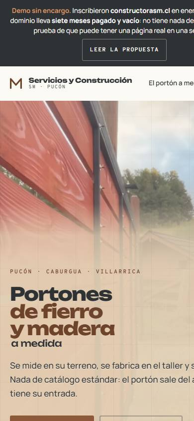
Servicios y Construcción SM Los 4 tipos de portón en plano técnico, con cotas y plazos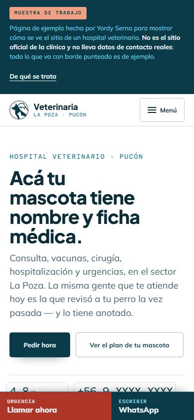
Veterinaria La Poza Línea de vida con los controles por edad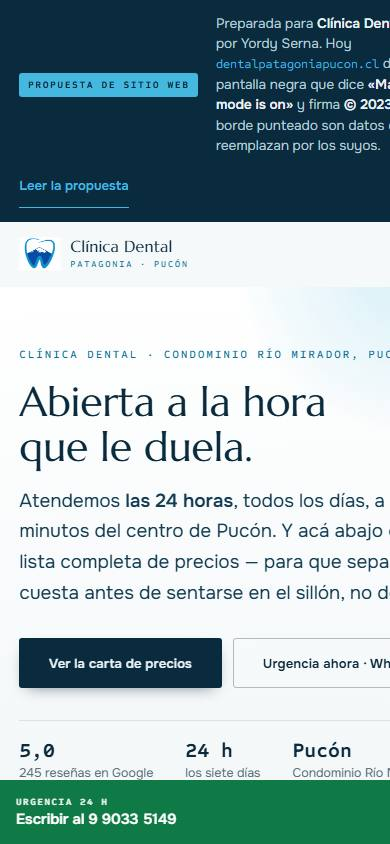
Clínica Dental Patagonia Carta de precios completa, antes del sillón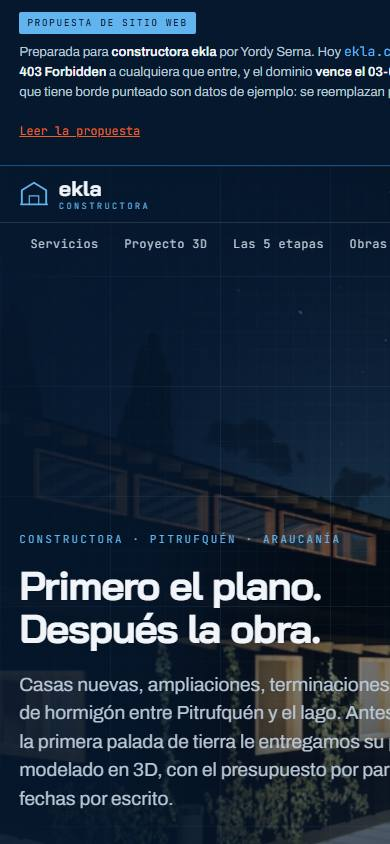
constructora ekla Las 5 etapas de la obra con sus hitos de pago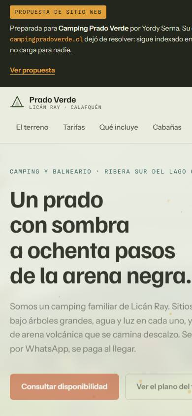
Camping Prado Verde Plano del terreno con los sectores marcados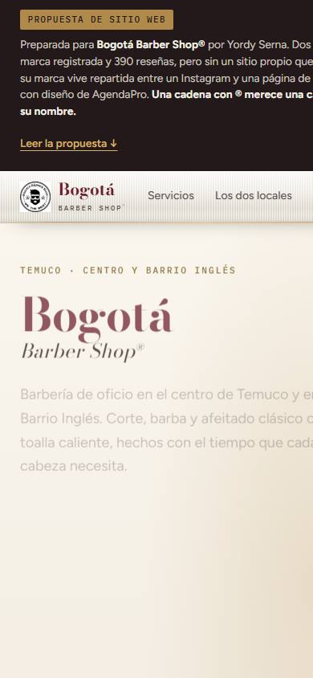
Bogotá Barber Shop Tablero de precios y faro 3D con respaldo en CSS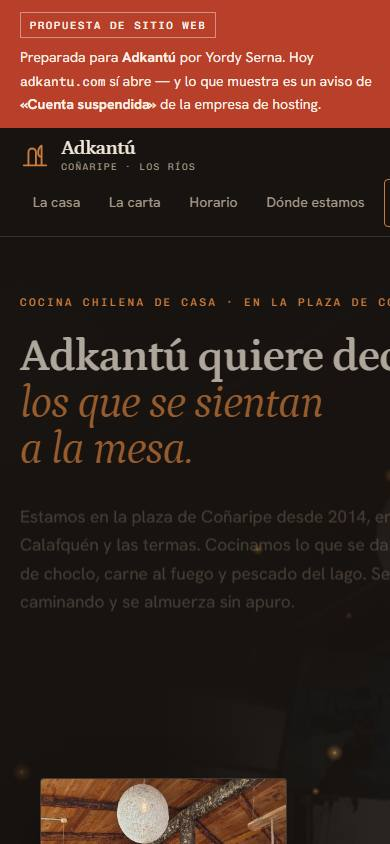
Adkantú Corte del valle entre el lago y las termas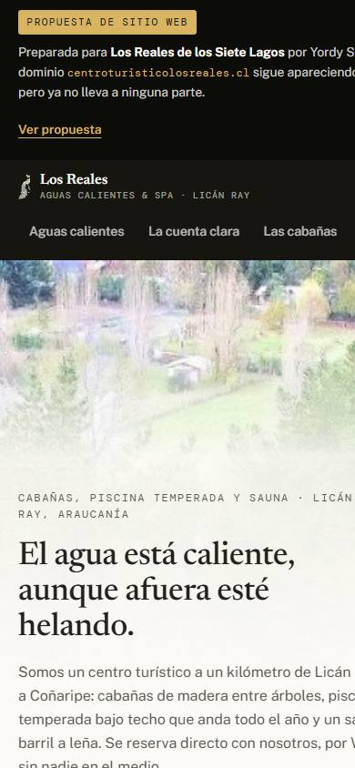
Los Reales de los Siete Lagos La cuenta clara: portal contra reserva directa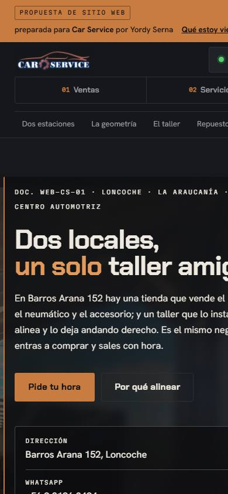
Car Service Lámina de alineación dibujada en SVG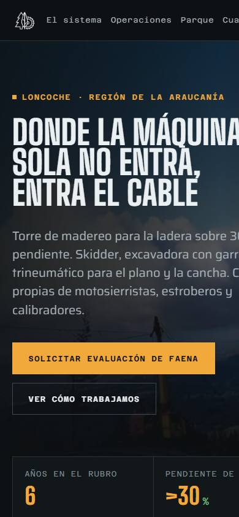
Forestal Robur SpA Plano de ingeniería con la pendiente acotada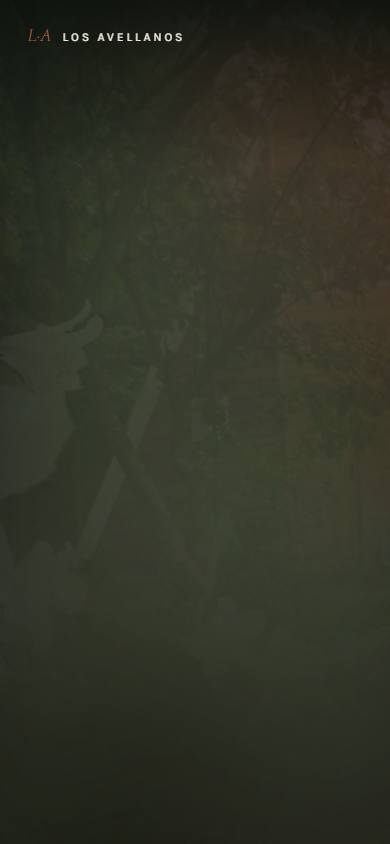
Cabaña y Vivero Los Avellanos Niebla en canvas, sin WebGL03 — Oficio
Prefiero conocer a fondo cuatro cosas que apenas manejar veinte. Todo lo que ves acá está hecho con lo mismo que se enseña el primer año — la diferencia está en el detalle, no en el stack.
| Base | HTML · CSS · JavaScript — sin framework por defecto, con framework cuando el proyecto lo pide |
|---|---|
| Movimiento | GSAP · IntersectionObserver · CSS |
| Entrega | Estático · GitHub Pages · Hostinger |
| Control | Git · GitHub |
| Estudiando | Ingeniería en Ciberseguridad |
| Idiomas | Español · Inglés técnico |
04 — Contacto
Escríbeme y lo conversamos. Respondo en el día.
yordisernasaez@gmail.comTambién en GitHub.